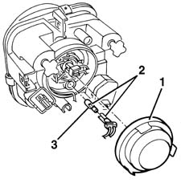
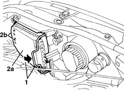

5540B26 BULB (ONE) FOR SIDE LIGHTS OF ONE HEADLAMP/LIGHT CLUSTER, L/H OR R/H - R+R
- Path
- Procedures > 55 ELECTRICAL EQUIPMENT > 5540 EXTERIOR LIGHTING > 5540B HEADLAMPS > 5540B26 BULB (ONE) FOR SIDE LIGHTS OF ONE HEADLAMP/LIGHT CLUSTER, L/H OR R/H - R+R
- Kind
- repair procedure (removal / refitting; the operation number is the code)
- Applies to
- all engines; all production periods
- Interactive page
- https://sloeber94.github.io/elrnDB-fMltpl/en/#/2891928
Applies to: all engines; production: fino a 05/99, da 09/03, da 06/99 a 03/02, da 04/02 a 08/03, fino a 05/04
 Removing
Removing
 Refitting
Refitting1. Open the bonnet lid then rotate the headlamp cover in an anti-clockwise direction and remove it.
2. Extract the bulb holder with the bulb.
The bulb holder is a press fit.
3. Extract the bulb from the bulb holder.
The bulb is a press fit.

Applies to: all engines; production: fino a 05/99, da 09/03, da 06/99 a 03/02, da 04/02 a 08/03, fino a 05/04
Refitting
RemovingInsert the bulb in the bulb holder.
Fit the bulb holder with the bulb in its housing.
Test the operation of the bulb.
Refit the headlamp cover and rotate it in a clockwise direction.
Applies to: all engines; production: da 06/04
Removing
Refitting- Open the bonnet.
- Rotate the cover retainer.
- Remove the cover (2a) releasing the retainers (2b).

Applies to: all engines; production: da 06/04
- Extract the bulb holder and bulb.
- Extract the bulb from the bulb holder (press fit).
Applies to: all engines; production: da 06/04
Refitting
Removing- Check the condition of the bulb and make sure that it is clean.
- Fit the bulb in the bulb holder and fit the bulb holder.
- Position the cover and attach the retainers.
- Check that the bulb is working.